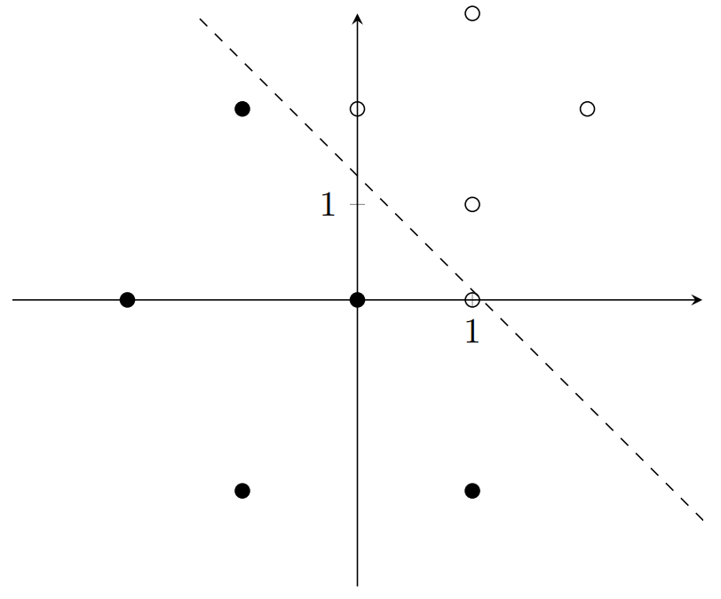
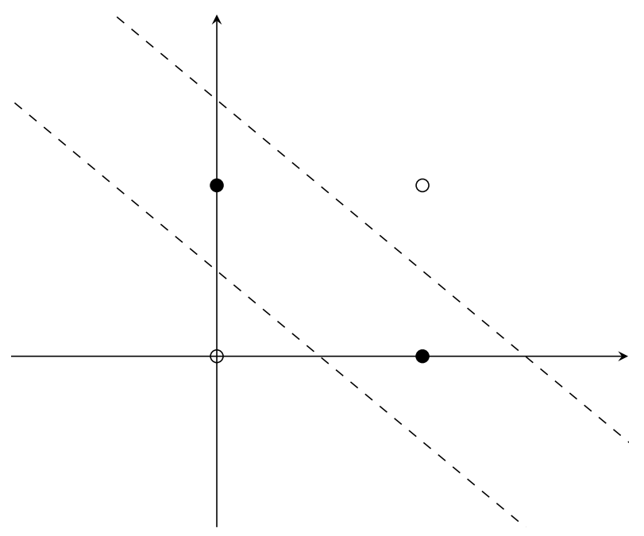

Neural Networks: Introduction and Overview
Alan Zheng
October 2018
Introduction
Introduction
Neural networks are fundamental to modern machine learning. In order to understand Convolutional Neural Networks (CNNs), Recurrent Neural Networks (RNNs), Generative Adversarial Networks (GANs), not only is it essential to understand the theory behind standard Neural Networks, but also the mathematics. To ensure complete understanding, we only use numpy to build our network, removing any reliance on a library.
The Perceptron

Definition
A perceptron is the fundamental unit of a Neural Network (which is even called a Multi-Layer Perceptron for this reason). Refer to the diagram above. Perceptrons contain two or more inputs, a weight for each input, a bias, an activation function (the step function) and an output. For the perceptron above with \(2\) inputs, the intermediate value \(f(x)\) is as follows \[f(x) = w_1x_1 + w_2x_2 + b\] The final output \(y\) is just the step function: \[y = \begin{cases} 0 & \text{if $f(x) < 0$} \\ 1 & \text{if $f(x) > 0$} \end{cases}\]
Visualization
The purpose of a perceptron is to classify data. Consider the function AND.
| x1 | x2 | out |
|---|---|---|
| 0 | 0 | 0 |
| 0 | 1 | 0 |
| 1 | 0 | 0 |
| 1 | 1 | 1 |
Let’s graph this data.

The line \(y = -x + 1.5\) splits this data the best. Let’s rearrange this to get \(x + y - 1.5 = 0\). Going back to the perceptron formula \[f(x) = w_1x_1 + w_2x_2 + b\] we can see that for the optimal perceptron, \(w_1\) and \(w_2\) are the coefficients of \(x\) and \(y\), and \(b=-1.5\). If \(f(x) > 0\), then \(x + y - 1.5>0\). We can see through this example that perceptrons are nothing more than linear functions. Above a line, perceptrons classify data points \(1\), below the line, they are \(0\).
Learning
How do perceptrons “learn” the best possible linear function to split the data? Perceptrons adjust the weights and bias to iteratively approach a solution.
Let’s consider this data:

The perceptron that represents the dashed line \(y+x-1.5=0\) has two inputs, \(x_1, x_2,\) with corresponding weights \(w_1=1, w_2=1\), and bias \(b = -1.5\). Let \(y\) represent the output of this perceptron. In the data above, the point \((1, 0)\) is the only misclassified point. The perceptron outputs 0 because it is below the line, but it should output a 1.
For some data point (input) \(i\) with coordinates \((i_1, i_2)\), the perceptron adjusts its weights and bias according to this formula: \[w_1 = w_1 + \alpha(d-y)(i_1)\] \[w_2 = w_2 + \alpha(d-y)(i_2)\] \[b = b + \alpha(d-y)\] Where \(d\) is the desired output, and \(\alpha\) is the learning rate, a constant usually between \(0\) and \(1\). Notice that the equation degenerates to \(w = w\) and \(b=b\) when the desired output equals the perceptron output. In other words, the perceptron only learns from misclassified points.
In the case of the above data, the perceptron only learns from the point \((1, 0)\). Let’s set \(\alpha=0.2\) and compute the learning steps: \[w_1 = 1 + 0.2(1-0)(1) = 1.2\] \[w_2 = 1 + 0.2(1-0)(0) = 1\] \[b = -1.5 + 0.2(1-0) = -1.3\]
After 1 iteration, the perceptron now represents the function \(y+1.2x-1.3 = 0\), which is shown below:

The next iteration follows: \[w_1 = 1.2 + 0.2(1-0)(1) = 1.4\] \[w_2 = 1 + 0.2(1-0)(0) = 1\] \[b = -1.3 + 0.2(1-0) = -1.1\]

All the points are now correctly classified. The perceptron has learned! Notice how it has not learned the best possible line, only the first one that zeroes the difference between expected and actual output.
Non-Linearly Separable Data
Consider the function XOR:
| x1 | x2 | out |
|---|---|---|
| 0 | 0 | 1 |
| 0 | 1 | 0 |
| 1 | 0 | 0 |
| 1 | 1 | 1 |
Let’s graph this data.

We need two lines to separate this data! A perceptron will never reach the optimal solution. However, multiple perceptrons can learn multiple lines, which can be used to classify non-linearly separable data.
Multi-Layer Perceptron
A neural network (NN) or Multi-Layer Perceptron (MLP) is a bunch of these perceptrons glued together, and can be used to approximate multi-dimensional non-linearly separable data. Let us again consider XOR. How do we arrange perceptrons to represent the two functions?
Clearly, we need two perceptrons, one for each function. The output of these two perceptrons can be used as inputs to a third perceptron, which will give us our output. Refer to the diagram below.

Let perceptron 1 model \(y + x - 1.5 = 0\) (the upper line), and perceptron 2 model \(y + x - 0.5 = 0\) (the lower line). Because the weights are the coefficients of these functions, \(w_1 = 1, w_2 = 1, w_3 = 1, w_4 = 1\) and the biases \(b_1 = -1.5\) and \(b_2 = -0.5\).
The output of Perceptron 1 will be a 1 for points above the upper line, and a 0 for the points below the upper line. The output of Perceptron 2 will be a 1 for points above the lower line, and a 0 for points below the lower line. Thus, above both lines, we get 2. In between the lines, we get 1. Below the lines, we get 0. However, in order to create a threshold to separate the points between the lines from the points outside, we would like the outputs for points between the lines to be additive.
In other words, we would like the inputs of Perceptron 3 to cancel outside the lines, and have a maximum for points inside the lines. Thus, we let \(w_6 = 1\) and \(w_5 = -1\). This gives us an output of 1 for points between the lines, and an output of 0 for points outside the lines. Thus, we can set the bias for Perceptron 3: \(b_3 = -0.5\).
Next time, we'll be looking at more complex Neural Networks and also more complex activation functions, such as the sigmoid function. It will be much more calculus/math-heavy than this lecture.
Problems
Write out the weights, biases, and structure of the Perceptron that classifies the function OR.
Write out the weights, biases, and structure of the Multi-Layer perceptron that classifies the function XNOR.
Write an implementation of the XOR Multi-Layer Perceptron in Python.